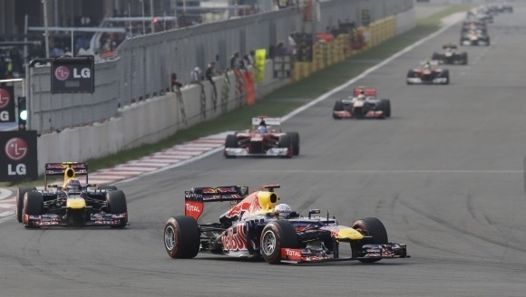
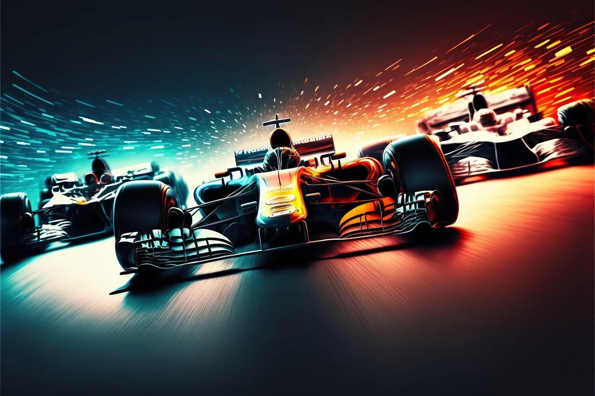
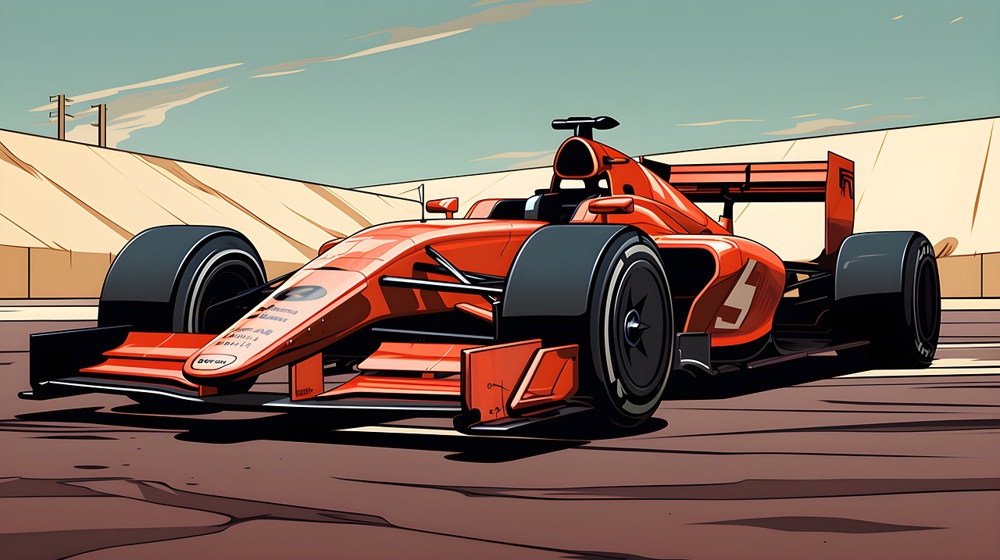

Zaujímavosti
-
1. Preťaženie
Vo formule 1 je jazdec vystavený preťaženiu 5G alebo 3G. Znamená to, že jeho telo má 5 násobok jeho váhy, záleží od preťaženia.
 -
2. Najmladší víťaz
Najmladším víťazom pretekov vo formule jeden je Max Verstappen, ktorý mal len 18 rokov. Svoju prvú výhru získal na veľkej cene Španielska v roku 2016.
 -
3. Pneumatiky
V pretekoch sú pneumatiky najviac zaťažované. V každom kole strácajú pol kilogramu zo svojej váhy.

-
4. Pretekár
Počas pretekov je jazdec vystavený extrémnym podmienkam, či už je to teplota alebo obrovské preťaženie. Práve tieto faktory spôsobujú to, že jazdec stráca svoju váhu. Po pretekoch zvyknú stratiť jazdci až 4 kilogramy.
 -
5. Monopost
Každý monopost má okolo 80 000 komponentov, ktoré sú neustále vyvíjané.